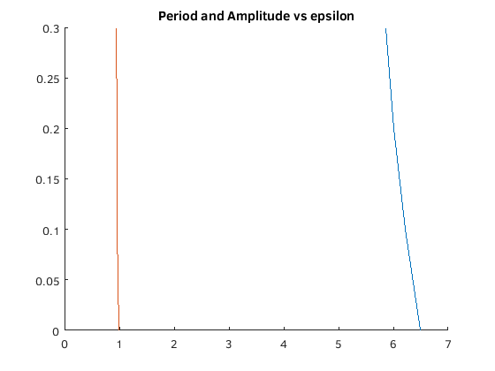

Problem Set D
Joseph Michael Martinsen
Math 308-510
Michael Pilant
Contents
Problem 3
clear; % Part A % y'' + sin(y) = 0 rhs = @(t,y) [y(2); - sin(y(1))]; figure; hold on; % Amplitude values A = [.1 .7 1.5 3]; % Colors for the Graph C = ['c' 'r' 'g' 'b' 'w']; fprintf('Problem 3\n\nPart A\n\n') for i = 1:4 [xa, ya ]= ode45(rhs,[0 8], [A(i) ; 0]); p(i) = findPeriod(xa, ya(:,1),0); plot(xa,ya(:,1),C(i)) [xa, ya ]= ode45(rhs,[0 -8], [A(i) ; 0]); plot(xa,ya(:,1),C(i)) fprintf('Estimated Period for A = %.2f is %.5f\n\n', A(i), p(i)) end axis([-8 8 -4 4]) title('Problem 3 - Part A') grid minor % Part B fprintf('\nPart B\n\n') for i = 1:4 F = @(x) 1./sqrt(1 - sin(A(i)./2).^2 * sin(x).^2); Q = 4 * quad(F,0,pi/2); fprintf('Using elliptic integral for A = %.2f I get %.5f\n', A(i), Q) fprintf('This value is %.4f different from the value in A\n\n', abs(p(i) - Q)) end % partc C fprintf('Part C\n\n') figure; hold on; % Amplitude values A = [.6 .8 .9 1]; % Colors for the Graph for i = 1:4 [xa, ya ]= ode45(rhs,[0 8], [A(i) ; 0]); p(i) = findPeriod(xa, ya(:,1),0); plot(xa,ya(:,1),C(i)) [xa, ya ]= ode45(rhs,[0 -8], [A(i) ; 0]); plot(xa,ya(:,1),C(i)) fprintf('Estimated Period for A = %.2f is %.5f\n\n', A(i), p(i)) end axis([-8 8 -4 4]) title('Problem 3 - Part C') grid minor for i = 1:4 F = @(x) 1./sqrt(1 - sin(A(i)./2).^2 * sin(x).^2); Q = 4 * quad(F,0,pi/2); fprintf('Using elliptic integral for A = %.2f I get %.5f\n', A(i), Q) fprintf('This value is %.4f different from the value in C before\n\n', abs(p(i) - Q)) end % Part D fprintf('Part D\n\n') fprintf('The change in the period is not much for values of A < 2. Once A>2 the period shoots up\n')
Problem 3 Part A Estimated Period for A = 0.10 is 5.90021 Estimated Period for A = 0.70 is 6.54814 Estimated Period for A = 1.50 is 7.54754 Estimated Period for A = 3.00 is 15.77415 Part B Using elliptic integral for A = 0.10 I get 6.28711 This value is 0.3869 different from the value in A Using elliptic integral for A = 0.70 I get 6.48119 This value is 0.0670 different from the value in A Using elliptic integral for A = 1.50 I get 7.30087 This value is 0.2467 different from the value in A Using elliptic integral for A = 3.00 I get 16.15556 This value is 0.3814 different from the value in A Part C Estimated Period for A = 0.60 is 6.67824 Estimated Period for A = 0.80 is 6.48574 Estimated Period for A = 0.90 is 6.48009 Estimated Period for A = 1.00 is 6.52801 Using elliptic integral for A = 0.60 I get 6.42754 This value is 0.2507 different from the value in C before Using elliptic integral for A = 0.80 I get 6.54413 This value is 0.0584 different from the value in C before Using elliptic integral for A = 0.90 I get 6.61687 This value is 0.1368 different from the value in C before Using elliptic integral for A = 1.00 I get 6.69998 This value is 0.1720 different from the value in C before Part D The change in the period is not much for values of A < 2. Once A>2 the period shoots up
Problem 7
clear; G = 32; M = 195/G; % rhs = @(t,y) [y(2); -sqrt((1 + y(1)) * (32) / (0.005/M + 0.5))]; rhs = @(t,y) [y(2); -sqrt((M*G*y(1) - M*G) / (.5*M + 0.005) )]; [xa, ya ]= ode45( ); a = ode45(rhs,[0 5], [1000 ; 0]); deval(a,0)
Problem 11
clear; fprintf('Problem 11\n\n') syms y(t) k = 1; m = k; lam = 0; i = [0 .1 .2 .3]; j = 1; for ep = i [V] = odeToVectorField(m * diff(y, 2) + lam * diff(y,1) + k * y + ep * y ^ 3 == 0); M = matlabFunction(V,'vars', {'t','Y'}); sol = ode45(M,[0 20], [0;1]); [xa, ya] = ode45(M,[0 20], [0;1]); p(j) = findPeriod(xa, ya(:,1),11); a(j) = findAmplitude(ya); fprintf('For epsilon = %.1f the estimated Amplitude is %.3f and Period is %.3f\n\n', ep, a(j), p(j)) j = j + 1; figure fplot(@(x)deval(sol,x,1), [0, 20]) title(['Problem 11 epsilon = ' num2str(ep)]); end figure; hold on; plot(p,i) plot(a,i) title('Period and Amplitude vs epsilon') hold off % repeat for negative values fprintf('Now for negative Values of epsilon\n\n') i = [0 -.1 -.2 -.3]; j = 1; % for epsilon = 0 for ep = i [V] = odeToVectorField(m * diff(y, 2) + lam * diff(y,1) + k * y + ep * y ^ 3 == 0); M = matlabFunction(V,'vars', {'t','Y'}); sol = ode45(M,[0 20], [0;1]); [xa, ya] = ode45(M,[0 20], [0;1]); p2(j) = findPeriod(xa, ya(:,1),11); a2(j) = findAmplitude(ya); fprintf('For epsilon = %.1f the estimated Amplitude is %.3f and Period is %.3f\n\n', ep, a2(j), p2(j)) j = j + 1; figure fplot(@(x)deval(sol,x,1), [0, 20]) title(['Problem 11 epsilon = ' num2str(ep)]); end figure; hold on; plot(p2,i) plot(a2,i) title('Period and Amplitude vs -epsilon')
Problem 11 For epsilon = 0.0 the estimated Amplitude is 0.990 and Period is 6.487 For epsilon = 0.1 the estimated Amplitude is 0.962 and Period is 6.213 For epsilon = 0.2 the estimated Amplitude is 0.957 and Period is 6.012 For epsilon = 0.3 the estimated Amplitude is 0.939 and Period is 5.858 Now for negative Values of epsilon For epsilon = 0.0 the estimated Amplitude is 0.990 and Period is 6.487 For epsilon = -0.1 the estimated Amplitude is 1.021 and Period is 6.470 For epsilon = -0.2 the estimated Amplitude is 1.057 and Period is 6.984 For epsilon = -0.3 the estimated Amplitude is 1.093 and Period is 7.551
Problem 16
fprintf('Problem 16\n\n') fprintf('Part A') % Part A syms y(x) syms x firstOrder = @(x, z) cos(z).^2 - ( x .* sin(z).^2); [X, Z] = meshgrid(-10:.5:5, -pi/2:.2:pi/2); W = firstOrder(X,Z); l = sqrt(1 + W.^2); quiver(X, Z, 1./l, W./l, .5) axis tight title('Problem 16 - Part A') fprintf('To the left x-axis, the field looks the same. To the right, a \n') fprintf('siniosodal nature occurs. The zeros of the solution occur \n') fprintf('towards x-> -inf and happen in 0.5 increments. It appears one or less intersections would occur.\n') fprintf(' The solutions oscillitate towards negative infinity but not infinity.') % Part B figure; hold on; for x = -10:5 [V] = odeToVectorField(diff(y, 2) == y*airy(0,x)); M = matlabFunction(V,'vars', {'x','Y'}); for i = -1:1 for j = -1:1 sol = ode45(M,[-10 5], [i;j]); fplot(@(x)deval(sol,x,1), [-10, 5]) end end end axis([-10 5 -80 80]) title(['Part B']) fprintf('The plots do not appear to be exactly the same')
Problem 16 Part ATo the left x-axis, the field looks the same. To the right, a siniosodal nature occurs. The zeros of the solution occur towards x-> -inf and happen in 0.5 increments. It appears one or less intersections would occur.
findPeriod() Function
function [ p ] = findPeriod( x, y, t) %findPeriod finds the period of the input values by finding where y crosses % the y axis, then averaging the next and previous x coordinate value % then multiplies that by 4 i = 2; while y(i) > 0 i = i + 1; end if t == 11 p = (x(i-1) + x(i)); else p = (x(i-1) + x(i)) * 2; end end
findAmplitdue() Function
function [ amp ] = findAmplitude( y ) % findAmplitude i = 1; while y(i,2) > 0 i = i + 1; end amp = y(i,1); end